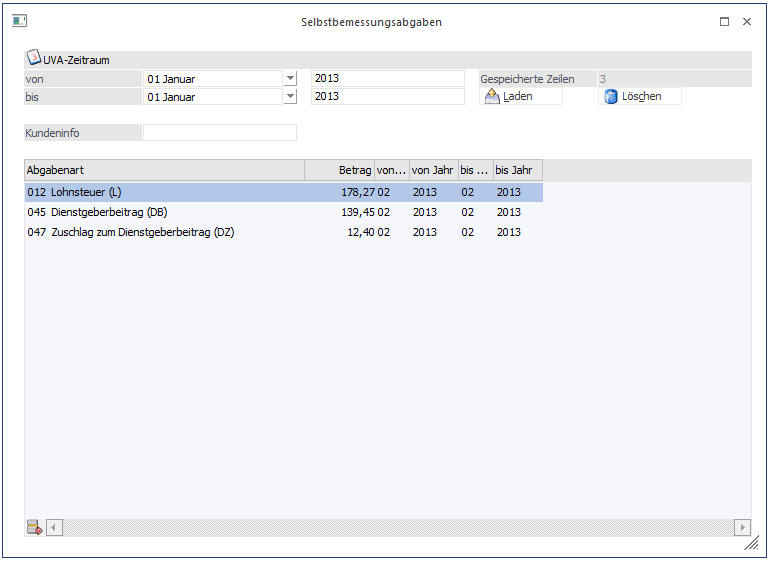
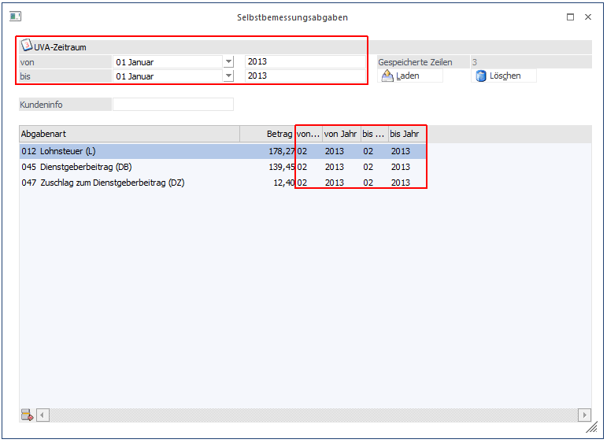
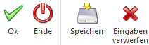
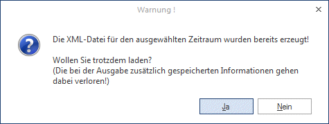
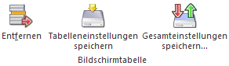

Im Fenster "Selbstbemessungsabgaben", das in der WinLine FIBU über den Menüpunkt
1 Auswertungen
1 Steuer-Meldungen
1 Selbstbemessungsabgaben
oder im WinLine LOHN (Österreich) über den Menüpunkt
1 Abschluss
1 Selbstbemessungsabgaben
aufgerufen werden kann, können XML-Dateien zur Übermittlung dieser an FINANZOnline erzeugt werden.
Bei Vorhandensein eines Überschusses lt. UVA (Überschuss zur Abdeckung von Abgaben verwenden) oder allfälligen Guthabens kann der Überschuss bzw. das Guthaben mit den Selbstbemessungsabgaben gem. U31 gegenverrechnet werden.

Ø UVA-Zeitraum
Aus den Auswahllistboxen kann jene (UVA-)Periode ausgewählt werden, für die die Selbstbemessungsabgaben gemeldet werden sollen. Die Jahreszahl wird vom Programm lt. Mandantenstamm automatisch vorbelegt. D.h. z.B. sollen die Lohnabgaben für den Februar mit dem Überschuss der UVA für den Jänner gegen gerechnet werden, muss als UVA-Zeitraum der Jänner angegeben werden.
Ø Kundeninfo
In diesem Feld kann eine 20-stellige Eingabe erfolgen, die auch in die XML-Datei übernommen, und auf dem Übertragungsbericht von FINANZOnline angezeigt wird.
Tabelle
Ø Abgabenart
In der Spalte Abgabenart kann aus der Auswahllistbox jene Abgabenart gewählt werden, die übermittelt werden soll.
Folgende Möglichkeiten stehen zur Verfügung:
ü U - Umsatzsteuer
ü EU - Einfuhrumsatzsteuer
ü KB - Kapitalertragssteuer auf Zinsen
ü L - Lohnsteuer
ü E - Einkommensteuer
ü BE - Einkommensteuer im Abzugswege von beschränkt steuerpflichtigen Einkünften
ü KA - Kapitalertragssteuer
ü AA - Aufsichtsratabgabe
ü N - Normverbrauchabgabe
ü KOH- Kohleabgabe
ü WA -Werbeabgabe
ü SI - Sicherheitsbeitrag
ü EL -Elektrizitätsabgabe
ü GA - Erdgasabgabe
ü K - Körperschaftssteuer
ü BK - Körperschaftssteuer im Abzugswege von beschränkt steuerpflichtigen Einkünften
ü AZ - Abgabe von Zuwendungen
ü KU - Kammerumlage
ü DB - Dienstgeberbeitrag
ü DZ - Zuschlag zum Dienstgeberbeitrag
ü SA - Straßenbenützungsabgabe
ü KR - Kraftfahrzeugsteuer
ü SE - Stiftungseingangssteuer
ü IE - Immobilienertragssteuer
ü KC - Kapitalertragssteuer/ Wertsteigerung und Derivate
ü STA - Stabilitätsabgabe
ü STS - Sonderbeitrag zur Stabilitätsabgabe
ü GEB - Gebühren
ü GZ - Gebühren/Zulassung
ü GMO - Gebühren aus dem Glücksspielmonopol
ü WZ - Wettgebührenzuschläge
ü GS - Glücksspielabgabe
ü LBU - Landeszuschlag Bgld
ü LKA - Landeszuschlag Ktn
ü LNO - Landeszuschlag NÖ
ü LOO - Landeszuschlag OÖ
ü LSA - Landeszuschlag Sbg
ü LSM - Landeszuschlag Stmk
ü LTI - Landeszuschlag T
ü LVO - Landeszuschlag Vbg
ü LWI - Landeszuschlag W
ü FG - Finanzierungsbeitrag
ü GBB - Gebühren (Bestandsverträge)
ü GBJ - Gebühren (Bestandsverträge/Journal)
ü GBW - Gebühren (Wechselgebühr)
ü VS - Versicherungssteuer
ü FS - Feuerschutzsteuer
ü MVS - Motorbezogene Versicherungssteuer
ü WET - Wettgebühren
ü SP - Spielbankabgabe
ü KO - Konzessionsabgabe
ü FLA - Flugabgabe
ü UM - Umsatzsteuer MOSS
Hinweis
Pro XML-Datei können maximal 20 Abgabenarten (Zeilen) angegeben werden!
Ø Betrag
Angabe des zu meldenden Betrages
Ø von Periode/ bis Periode
Aus den Auswahllistboxen kann gewählt werden, auf welche Perioden sich die einzelnen Werte der Abgabenarten beziehen.
Beispiel
Die Lohnabgaben beziehen sich auf den Monat Februar und müssen im März gemeldet werden.
Im März wird die UVA für den Monat Januar gemeldet.
Daher:
UVA-Zeitraum (= für welche UVA-Periode soll die Meldung erfolgen): 01-Januar / 01-Januar
Abgabenzeitraum (= für welchen Zeitraum wird gemeldet): 02-Februar / 02-Februar

Buttons

Ø OK
Durch Drücken des OK-Buttons wird die XML-Datei erstellt.
Hinweis
Die vom Programm erzeugten XML-Dateien werden standardmäßig immer im Verzeichnis FINANZOnline - einem Unterverzeichnis des Programmverzeichnisses - abgestellt.
Ist bereits eine Datei für den gewählten Zeitraum vorhanden, so wird eine Warnung diesbezüglich angezeigt:

Wird die XML-Datei erzeugt, so öffnet sich anschließend das Fenster "FINANZOnline".
In diesem Fenster können mehrere Aktionen durchgeführt werden (sieh dazu Kapitel "FINANZOnline" in WinLine FIBU)
Ø Ende
Mit dem Ende-Button wird das Fenster geschlossen. Nicht gespeicherte Daten werden dabei verworfen.
Ø Speichern
Durch Drücken des Speichern-Buttons werden die getätigten Eingaben für den angegebenen UVA-Zeitraum gespeichert.
Beispiel
Für den UVA-Zeitraum werden die Eingaben gespeichert. Dies wird auch unter "gespeicherte Zeilen" angezeigt. In der Berechnung der gespeicherten Zeilen wird auch das Feld "Kundeninfo" miteinbezogen; daher ist in diesem Fall (Kundeninfo + Kraftfahrzeugsteuer) die gespeicherte Zeilenanzahl = 2.
Ø Eingaben verwerfen
Durch Drücken dieses Buttons können alle getätigten Eingaben zurückgesetzt werden; d.h. die Tabelle sowie das Kundeninfofeld wird geleert und der UVA-Zeitraum auf 01 - 01 gesetzt.
Fensterbuttons
Ø
Wird ein UVA-Zeitraum angegeben, für den es bereits gespeicherte Zeilen gibt, steht der Button "Laden" zur Verfügung. Es gibt zwei Arten, wie gespeicherte Zeilen entstehen können.
ü Zeilen wurden manuell eingegeben und gespeichert.
ü Zeilen wurden aus dem WinLine LOHN erzeugt.
Durch Anklicken des Buttons Laden können diese gespeicherten Zeilen in die Tabelle geladen werden.
Ø
Mittels Löschen-Button können, nach Bestätigung einer Sicherheitsabfrage, erfasste Zeilen für einen bestimmten UVA-Zeitraum gelöscht werden.
Tabellenbuttons

Ø Entfernen
Mittels Entfernen-Button können Zeilen in der Tabelle wieder entfernt werden.
Ø Tabelleneinstellungen speichern
Die Spalten einer Tabelle können grundsätzlich an beliebige Positionen verschoben, bzw. in der Breite entsprechend angepasst werden. Durch Anwahl des Buttons "Tabelleneinstellungen speichern" werden die Einstellungen benutzerspezifisch gespeichert und bei dem nächsten Aufruf des Programmpunktes wieder vorgeschlagen.
Ø Gesamteinstellungen speichern
Im Gegensatz zu "Tabelleneinstellungen speichern" können mit "Gesamteinstellungen speichern" mehrere Tabellenaufbauten gespeichert und nach Wunsch geladen werden. Zusätzlich werden Sonderfunktionen der Tabelle (z.B. "Spalte gruppieren") ebenfalls bei der Speicherung bedacht.